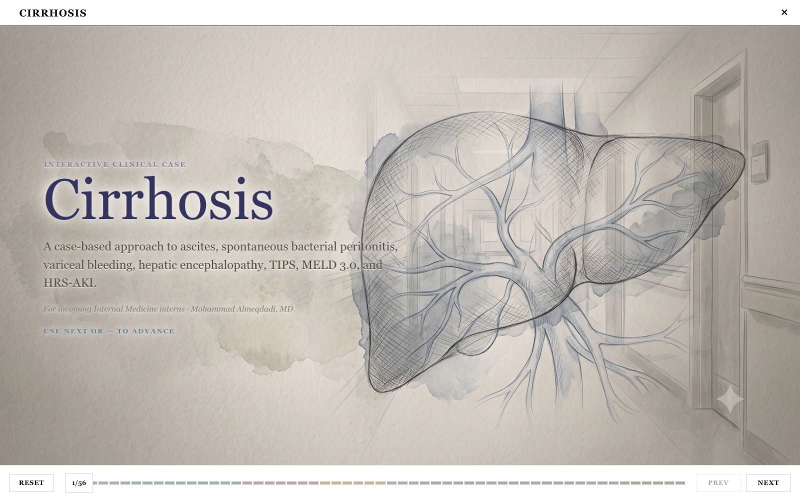

Interactive clinical tools and teaching cases
Hepatology education, clinical calculators, simulators, and research software for clinicians and trainees.
 Interactive case
Interactive case
Acute Liver Injury Cases
Work through evolving liver tests, differentials, and management decisions.
Interactive caseCirrhosis Interactive Case
Follow a longitudinal case through decompensation, complications, and transplant. Clinical calculator
Clinical calculator
Liver Enzyme Backtracker
Estimate earlier liver enzyme values using known enzyme half-lives. Clinical calculator
Clinical calculator
Portal Hypertension Predictor
Estimate portal hypertension risk from clinical inputs. Physiology simulator
Physiology simulator
Liver Simulator
Model how liver injury and treatment change laboratory trajectories. Physiology simulator
Physiology simulator
Portal Pressure Simulator
Adjust flow and resistance to see how portal pressure changes. Research writing tool
Research writing tool
Abstract Atelier
Draft and refine medical abstracts with PubMed-aware reference support. Home automation tool
Home automation tool